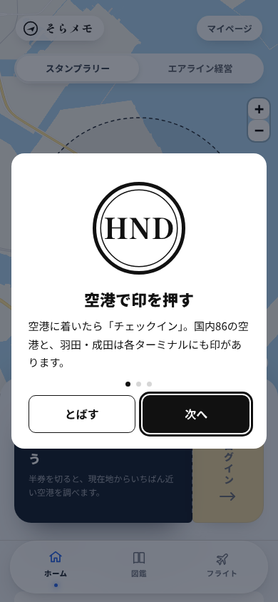
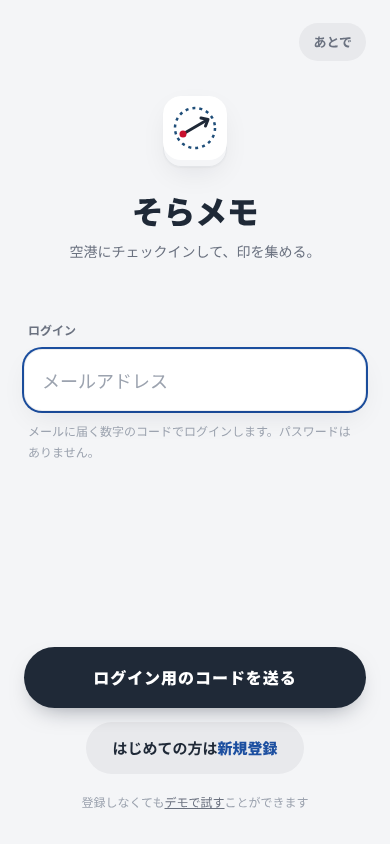
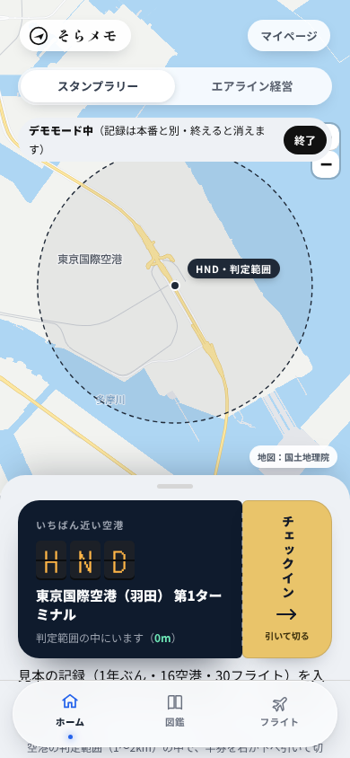
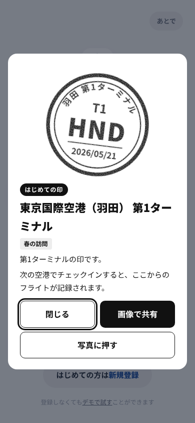
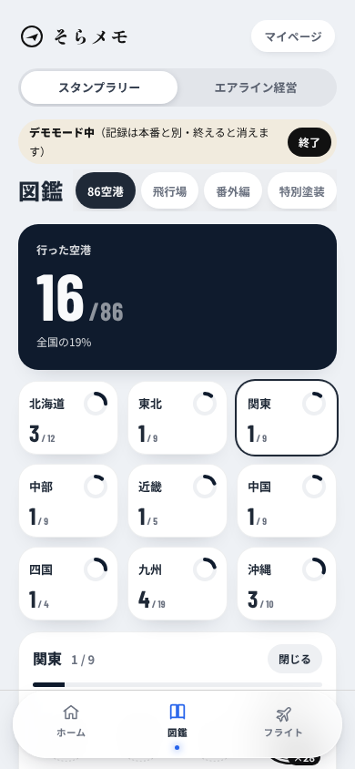
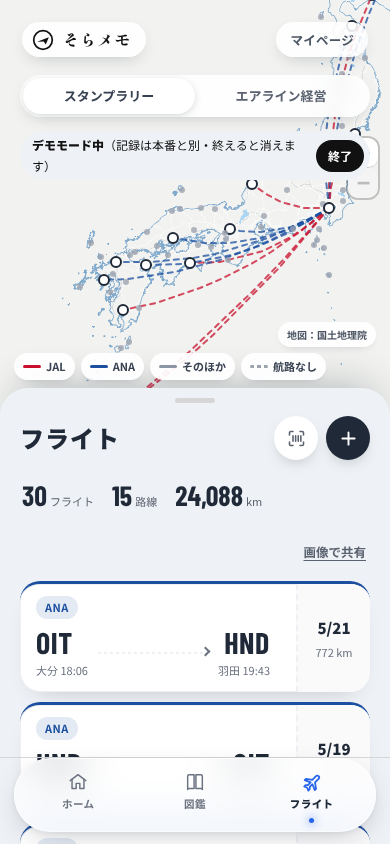
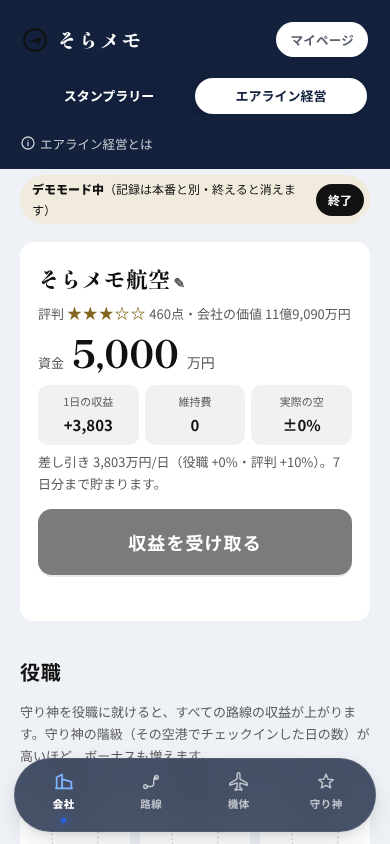

デザイン担当 ・ 2026-11-06 ・ アプリにはまだ入っていません
そらメモを根本から見直す：方向の案3つ
今の画面を少し直すのではなく、何がホームか・下のタブ・チェックインのやり方・スタンプラリーと経営のつながり・3つの使い方の分け方から考え直した3つの案です。使う人の目的と今の遠回りは 00-goals.md に。数字は見本です。
デザイン担当のおすすめ：B（帳面）を土台に、A の「空港に入ったら半券が前に出て、乗る便を選ぶ」をチェックインの流れに入れる。C の空の窓は、撮る人の「空」タブの中身にする。
理由：86空港のどこでも中身があり、1月に間に合う見込みがいちばん高く、スタンプラリーと経営のつながり（帳面のページから会社が育つ）がいちばん見える。くわしくは docs/pm/report-design-rethink-1106.md。
A 旅の時間で変わる1画面
- ホームを「いま」の1画面にする
- 位置と時刻で、空港の外・空港で・機内・着いたが自分で切り替わる
- 記録と経営は「着いた」で1枚にまとまる
- 下のタブ
- いま・帳面・会社・マイページ（4つ）
- チェックイン
- 範囲に入るとホームが「空港で」に替わり、半券がいちばん上に。続けて乗る便を選ぶ
- 経営への入口
- 「着いた」の1枚（この旅で会社に入ったもの）と「会社」タブ
- 3つの使い方
- 「いま」の中の並び順だけを変える（タブは同じ）
- 作る手間
- 大
- 1月の公開
- 全部は難しい。「空港の外／空港で」の2つだけなら間に合う見込み
- 変える決定事項
- ホームは「地図とシート」→ 空港の外のときだけ地図とシート
- 使い方ごとにタブの構成を変える → タブは同じで並び順だけ
B 集める帳面が主役
- 図鑑・印・路線・乗った機体・会社を、ひとつの帳面にまとめる
- 地図は帳面の中の1ページ（地図は1つ）
- まん中の丸いボタンで、どこからでも1回で半券へ
- 下のタブ
- 帳面・空・◎印をもらう・会社・マイページ（5つ）
- チェックイン
- まん中の丸「印をもらう」→ 半券。切る前に帳面のどこに押されるかを見せ、乗る便を選ぶ
- 経営への入口
- 帳面の最後のページ＝「会社」タブ。路線・機体・守り神がどのページから来たかを書く
- 3つの使い方
- 帳面のページの並びと「空」タブの中身を変える（タブは同じ）
- 作る手間
- 中
- 1月の公開
- 間に合う見込み（今の図鑑・フライト・経営の画面を並べ直すのが中心）
- 変える決定事項
- ホームは「地図とシート」→ ホームは帳面の表紙（地図は帳面の1ページ）
- 使い方ごとにタブの構成を変える → タブは同じでページの並びと「空」の中身
C 空を見る窓が主役
- いまの空（運用・近くの機体・次に来る機体）を入口にする
- チェックインは窓の右上のピルから
- 機体を押すと「見た」「乗った」に残せて、会社の機体につながる
- 下のタブ
- 空・帳面・会社・マイページ（4つ）
- チェックイン
- 判定範囲の中なら窓の右上の黒いピル「印をもらう」→ 半券
- 経営への入口
- 機体から（見たに残す・乗った便にする）と「会社」タブ
- 3つの使い方
- 修行する人は「空」の中身が「次に乗る便・実績・予定」。撮る人と気軽な人は空の窓
- 作る手間
- 中〜大
- 1月の公開
- 14空港のホームとしてなら間に合う。72空港では中身が薄い（推定がない）
- 変える決定事項
- ホームは「地図とシート」の形は残すが、中身が運用と機体になる
- 使い方ごとにタブの構成を変える → タブは同じで「空」の中身だけ
今の本番（main の web/ をデモで触って撮った）







